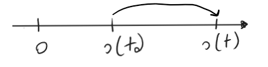
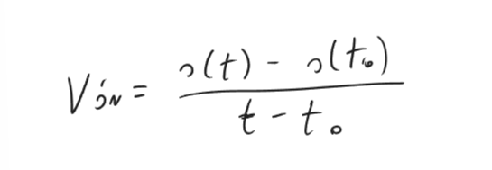
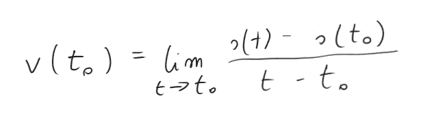
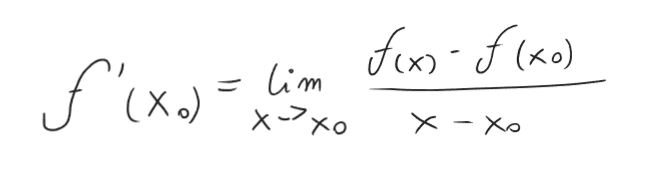

Przypuśćmy, że punkt porusza się po osi liczbowej, a funkcja s opisuje jego położenie w chwili t.

t0, t ↠ Czas
s() ↠ Funkcja opisująca dystans/ położenie punktu
Prędkość średnia punktu w przedziale od t0 do t wyraża się wzorem:
Prędkość w chwili t0 ,(czyli prędkość chwilową v(t0) ) określamy jako granice ilorazu różnicowego przy t dążącym do t0:
Jest to "wzięte" z Definicji pochodnej funkcji f w punkcie x0:
Prędkość chwilowa jest pochodną położenia względem czasu. Chodzi o t0.